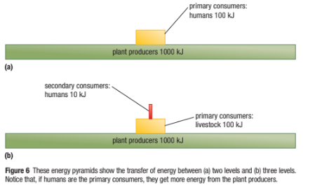
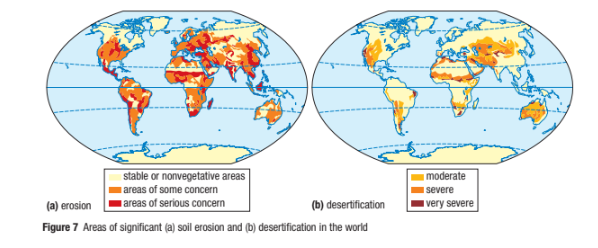
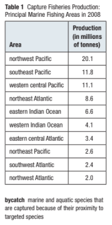
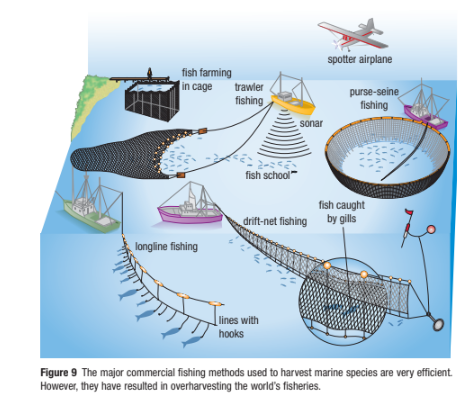

Implications of Human Population Growth and Issue in Population Growth Part 1
Urbanization
The urban area has a cluster of at least 1000 people and a minimum population density of at least 400 people per square kilometer.
Reasons for migration into urban areas are-
- Unpredictable environmental conditions create problems for farming.
- Improved opportunities for jobs, education, and housing.
Callout
Problems due to Urbanization
As cities push outward to accommodate their ever-growing populations, tremendous pressure is put on the land that is used to produce food. These changes in land use affect the water cycle and disturb or destroy habitats. Impermeable surfaces, such as asphalt and concrete, reduce the ability of the ground to absorb water.

- Natural waterways are dammed and re-routed.
- Bogs and wetlands are drained and converted into building sites, adding to the amount of impermeable surface and destroying habitats.
- Emissions from vehicular traffic enter and pollute natural waterways, affecting both the water quality and the air quality.
- Access to clean, safe water is an ongoing concern for cities today.
- The quality of an urban environment is directly related to the health of its inhabitants and their quality of life.
- Population growth and economic development put pressure on the natural environment and create many local issues that need to be considered.
- Sending solid waste to landfills creates pollution and is an inefficient use of land.
- For cities to be more sustainable, these key environmental issues cannot be ignored.
Feeding the World
Malnutrition is a condition that develops when the body lacks proper nutrients.
The United Nations defines the minimum critical diet or the minimum amount of food that should be consumed each day, as no less than 9900 J (joules).
Below this amount, chronic malnutrition may result.

According to the World Food Programme, there are five key causes of hunger:
- Natural disasters (Floods, Droughts, etc)
- Conflict (War disrupts agricultural production)
- Poverty (People who live in poverty do not have access to food)
- Poor Agricultural Infrastructure (lack of adequate roads, storage, and irrigation facilities).
- Over-exploitation of the Environment(overcropping, and overgrazing)
Three general sources of food supply are-
Croplands Rangelands Ocean fisheries
- Croplands produce grains and provide about 77% of the world’s food.
- Rangelands produce meat, mostly from grazing livestock, and provide about 16% of the world’s food.
- Ocean fisheries provide about 7 % of the world’s food.
Since 1950, there has been a staggering increase in global food production from all three sources.
Reasons are-
- Technological advances
- High-tech fishing boats and gear
- High-yield varieties of wheat, rice, and corn
- Use of densely populated feedlots and enclosed pens for raising cattle, pigs, and chickens
- Aquaculture ponds and ocean cages for raising some types of fish and shellfish
- Pesticides
- Irrigation
- Synthetic fertilizers
Challenges to Increasing Food Production
Some challenges are-
- Environmental Degradation
- Pollution
- Lack of water for irrigation
- Overfishing
- Overgrazing by livestock
- Loss of vital ecological services
To feed the world’s 7 billion people, we must produce and equitably distribute more food than has been produced since agriculture began about 10,000 years ago.

Some analysts believe that we can accomplish this, mostly through genetic engineering.
A key problem is human activities, which continue to degrade more of Earth’s net primary productivity.
Since the beginning of agriculture, about 10,000 species have been used as sources of food for people and livestock.
Today, only 14 plants and 8 terrestrial animal species supply an estimated 90 % of our global intake of calories.
- Just three-grain crops—wheat, rice, and corn—provide more than half of the calories that people consume.
- Two-thirds of the people in the world survive primarily on these traditional grains, mostly because they cannot afford more meat and other products of domesticated livestock, which also consumes grain.
- Such a dependence on just a few plant species for food shows a dramatic reduction in agricultural biodiversity.
- Fish and shellfish are important sources of food for about 1 billion people, mostly in Asia and in coastal areas of developing countries.
- On a global scale, however, fish and shellfish supply only 7 % of the world’s food and about 6 % of the protein in the human diet.
Callout
Industrial v/s Traditional Agriculture
- The growth of food using machines synthetic fertilizers and pesticides
- Accounts for 80 % of the world’s food supply.
- It involves growing cash crops, such as bananas, coffee, soybeans, sugar cane, cocoa, and vegetables.
- The growth of food by hand, using natural fertilizers and pesticides
- Accounts for 20 % of the world’s food supply.
- Includes numerous forms of shifting cultivation in tropical forests, as well as nomadic livestock herding.
Agriculture in Canada
Canada has 5% of the world’s available land. In 2011, the agriculture industry contributed $87.9 billion to Canada’s economy. Canada is the world’s fourth-largest exporter of food. Canada is a key player in supplying the world with food.
- The number of farms in Canada has been declining in recent decades, but the average size of farms has been increasing due to mechanization, economic pressures, and social changes, among other factors.
- The net result is that the amount of land farmed in Canada—68 million hectares—has remained about the same over the past 50 years.
- Canada produces an agricultural surplus and exports $21 billion worth of raw and value-added goods, including grains, oilseeds, fruits, vegetables, and meats, to 200 different countries.
- Much of Canada is too cool, dry, rocky, and/or lacking adequate soil for growing. Only about 7 % of our terrestrial area is considered to be agricultural land.
- Precipitation, soil quality, and temperature are among the factors that determine where agriculture is practiced in Canada.
The Prairie provinces account for 83 % of the farmland, while Ontario and Québec have a combined total of 13 %.
- Dry conditions, seasonal temperatures, and optimum soil make the Prairies an ideal environment for producing most of Canada’s wheat, barley, oats, soybeans, canola, hay, and cattle.
- Ontario and Québec produce most of the country’s poultry, pigs, dairy products, and maple syrup. British Columbia is famous for its fruit, wine, and salmon. The Maritimes are best known for their potatoes and seafood.
Callout
Energy Use in the Human Food Web
Ecologists use energy pyramids: models that depict the energy flow from consumers through a food chain or web (Figure 6). Each energy transfer level in a food chain or web is referred to as a trophic level. The pyramidal shape of an energy pyramid shows that the energy flow through an ecosystem is inefficient.
In fact, only about 10 % of the energy from one level moves to the next. Figure 6 shows that more energy can be obtained by humans through the consumption of producers (grains, fruits, and vegetables) than through the consumption of higher-level consumers (such as cattle and other livestock).

The energy in agriculture can also be measured in terms of the energy that goes into producing a unit of food. Industrialized farming is considered high-input farming because there are many resources that go into producing food. For example, in the United States, industrialized agriculture consumes about 17 % of all the commercial energy in the country each year. Canadian values would be similar.
Callout
Considering the energy that is used to grow, store, process, package, transport, refrigerate, and cook all the plant and animal food, about 10 units of non-renewable fossil fuel energy are needed to put 1 unit of food energy on the table. Additional energy is needed for consumers to shop and purchase food and prepare it before consuming it.
By comparison, every unit of energy from human labor in traditional subsistence farming provides at least 1 unit of food energy. Traditional intensive farming provides up to 10 units of food energy.
Another way to measure the energy in agriculture is to calculate agriculture’s ecological footprint. The land that is used to raise crops or livestock, the fertilizer and pesticides that can contaminate surrounding lands, the space that is needed for waste disposal, the water that is needed for irrigation and sustaining livestock, and the fossil fuels that are burned during food production contribute to the size of agriculture’s ecological footprint.
All of these factors contribute to climate change. Burning fossil fuels sends greenhouse gases into the atmosphere, and clearing land to plant crops and raising livestock eliminates trees, which are needed to remove CO2 from the air. Livestock that are ruminants (cattle, sheep, and goats) contribute to greenhouse gas emissions by releasing methane gas. Therefore, the food choices we make as consumers can make an environmental difference.
For example, choosing locally grown grains and other food sources that are low on the food pyramid conserves more energy and helps to lessen agriculture’s ecological footprint.
Threats to Soil
The next time you are shopping for groceries or having lunch in a fast-food restaurant, take a moment to remember that most food, even highly processed food, comes from the ground. This is why preserving the world’s topsoil is the key to producing enough food to feed the world’s growing population. Land degradation occurs when natural or human-induced processes decrease the future ability of the
land to support crops, livestock, or wild species. The key threats to the land include soil erosion and lost fertility, desertification, and salinization—increased amounts of
salt in the soil.
Select each tab to learn more.
Soil erosion is the movement of soil components from one place to another. Some soil erosion is natural, caused by wind and flowing water. In undisturbed vegetated ecosystems, the roots of plants help to anchor the soil, and soil is not usually lost faster than it forms. Soil becomes more vulnerable to erosion when human activities destroy plant cover. Some of the activities that destroy plant cover are farming, logging, construction, overgrazing by livestock, off-road vehicle use, and deliberate burning of vegetation. About 60 % of eroded soil ends up as sediment in nearby surface water, where it can pollute the water; kill fish and shellfish; and clog irrigation ditches, boat channels, reservoirs, and lakes.
Overall, soil erosion causes an estimated $400 billion worth of damage worldwide each year (Figure 7(a)). Some methods to stop erosion are using rows of trees as windbreaks, building terraces on steep slopes, and using conservation tillage systems and crop rotation.
Desertification occurs when the productive potential of arid or semi-arid land falls by 10 % or more because of a combination of natural climate changes that cause prolonged drought and human activities that reduce or degrade topsoil.
Desertification can be moderate (a 10 to 25 % drop), severe (a 25 to 50 % drop), or very severe (50 % or more, usually creating huge gullies and sand dunes). In extreme cases, desertification leads to what we call desert. About 30 % of the world’s land and 70 % of all drylands suffer from the effects of desertification (Figure 7(b)).
We cannot control when or where prolonged droughts occur, but we can reduce overgrazing, deforestation, and destructive forms of planting, irrigation, and mining that leave the soil barren.

Callout
One method for keeping the soil moist is irrigation, which involves channeling water to moisten land that does not receive enough rainfall to support agriculture. Irrigation is one way that we have expanded our growing capacity around the world. About 20 % of the world’s cropland is irrigated, and this 20 % produces almost 40 % of the world’s food. In Canada, the Prairies and the interior of British Columbia rely heavily on irrigation. Alberta uses about 60 % of all irrigation resources in Canada.
However, irrigation has a drawback. Most irrigation water is a dilute solution of various salts that are picked up as the water flows through soil and rocks. The water that is not absorbed into the soil evaporates, leaving behind a thin crust of dissolved salts, such as sodium chloride, in the topsoil. Over time, the salts accumulate in the upper soil layers, causing salinization, which stunts crop growth, lowers crop yields, and eventually kills plants and ruins the land.
Soil erosion, desertification, and salinization, combined with overgrazing and overplanting, contribute to a loss of soil fertility. When the nutrients are stripped from the soil, it can no longer support agriculture. Some crops, such as corn, strip the soil of nutrients, so farmers may alternate these crops with other crops from season to season. Fertilizers, ranging from natural manure and plant compost to commercial inorganic chemicals such as nitrogen and phosphorus, can also replace lost nutrients.
Sustainable Agriculture
One way to reduce the harmful environmental effects of agriculture is to use sustainable or low-input technologies. Sustainable agriculture (or low-input agriculture) uses technologies that are based on ecological knowledge to increase yields, control pests, and build soil fertility while using less energy.
- Sustainable agriculture helps to increase biodiversity because it involves planting a variety of crops each year. It may also use organic farming methods, which reduce the use of pesticides and synthetic fertilizers.
- Organic agriculture is a sustainable system of food production that is aimed at producing high-quality, nutritious food with little or no reliance on synthetic pesticides or synthetic fertilizers. Organic farmers, for example, use manure and tilled-in crop residues to help maintain and build soil fertility by increasing its carbon content.
This can help to reduce runoff and improve water quality.
Livestock that is raised organically have improved living conditions and do not consume antibiotics or additives. Organic produce and livestock are free of antibiotics and growth hormones, genetically modified organisms, and irradiation.
Globally, the organic agriculture industry is worth $35 billion per year and is growing rapidly throughout the world (Figure 8). In Canada, the sale of organic food is a $2.1 to $2.6 billion business, but about 80 % of this food is imported. For many people, choosing organic food is an integral part of a healthy lifestyle, which helps reduce their ecological footprint.
Callout
Aquatic Food Sources: The World’s Fisheries
Not all of our food is produced on land. Approximately 95 million tones of wild fish and shellfish are caught in the world’s oceans, rivers, and lakes each year. Another 45 million tones are farmed. These numbers are growing each year. At the current rate, researchers fear that our fisheries will soon be depleted beyond recovery.
- Fish are renewable resources as long as the annual harvest leaves enough breeding stock to renew the species for the next year. Overfishing leaves too little breeding stock to maintain the population. Prolonged overfishing leads to commercial extinction when the population of a species declines to the point where it is no longer profitable to fish for it. Fishing fleets then move to a new species or a new region, hoping that the overfished species will recover.
- Since the 1950s, mechanized fishing has been growing. By the 1990s, the worldwide expansion of fishing grounds had peaked, and the fisheries quickly became overexploited. Table 1 identifies the principal marine fishing areas of the world.
Today, commercial fishing employs about 40 million people, and about 2 million motorized fishing boats operate around the world. Some common commercial fishing methods involve the use of longlines, drift nets, purse-seine nets, and trawl
nets (Figure 9). Different methods are used, depending on the species of fish targeted.
These methods are so efficient, however, that they have eliminated some fish species. International conservation groups are working to minimize the amount of bycatch: the unintended fish and other species that get caught in fishing nets. For example, “dolphin-safe” tuna is caught without a bycatch of dolphins.


Select each tab to learn more.
There are 34 million people living in Canada, and each person needs clean air and water. Urban areas are growing, putting a strain on existing water sources and the infrastructure that is needed to channel water to household faucets. Many people
depend on water sources such as aquifers (groundwater storage reservoirs in the water cycle).
While groundwater is a renewable source, reserves replenish relatively slowly so they have the potential to be depleted. In addition, urban development in watershed regions pollutes groundwater. Runoff from agriculture can also pollute groundwater and other water supplies, requiring additional monitoring and treatment to make drinking water safe.
Increased development and industry threaten our fresh air, as well. The quality of our air has a direct impact on our health and the natural environment, so we need our air to be as clean as possible. Air pollution can be caused by emissions of harmful
gases (such as sulfur dioxide and nitrogen oxides) or particulates (such as soot) into the atmosphere. Air pollution can also be caused by disturbances to the normal composition of the air.
- For example, increased emissions of greenhouse gases, such as carbon dioxide, disrupt the balance of the natural carbon-oxygen cycle. When natural cycles are disrupted by the overproduction of industrial and vehicular emissions, the result is air pollution.
Despite its importance, water is one of our most poorly managed resources. We waste it and pollute it. Many Canadians believe that we will have a freshwater shortage if we do not pay attention to its conservation. However, despite this apparent appreciation of the value of fresh water, we continue to waste it. Many of us use five times as much water per day as we believe we use.
- Only a fraction of Earth’s total volume of water is available to us as soil moisture, usable groundwater, water vapor, and surface water. Some 97.4 % of the world’s total volume of water is found in oceans and saline lakes and is therefore too salty for
drinking, irrigation, and industry (except as a coolant). - Most of the remaining 2.6 % that is fresh water is locked up in ice caps and glaciers or in groundwater that is too deep or salty to be used.
The world’s freshwater supply is continuously collected, purified, recycled, and redistributed in the solar-powered hydrologic cycle. Water evaporates from bodies of water, land, and organisms into the atmosphere, where it condenses and falls back to Earth as precipitation. It flows across Earth’s surface as runoff, entering wetlands, streams, rivers, lakes, and oceans, and infiltrating underground to form groundwater.
This water-recycling system works only as long as we do not overload it with waste or withdraw water faster than it is replenished. In parts of the world, we are doing
both of these things. Differences in average annual precipitation play a large role in water availability.
- For example, Canada, with only 0.5 % of the world’s people, has 20 % of the world’s fresh water. In comparison, China, with 21 % of the world’s people, has only 7 % of the world’s fresh water.
- Approximately 1.4 billion people around the world lack access to clean water. Inadequate access to clean water claims the lives of millions, many of them children, due to water-borne diseases and poor sanitation.
- A growing world population, combined with dwindling water resources, will compound this problem. We are using more than half of the world’s available surface runoff and fresh water for
irrigating crops, cooling power plants, running industries, and satisfying our home and public consumption needs. This percentage is expected to increase to 70 %, or even 90 %, by 2025. By then, it is estimated that one-third of the world population will be facing a severe water crisis.
Callout
Water Pollution
Various causes of Water Pollution are-
- Agricultural runoff
- Sewage
- Industrial waste
- Atmospheric deposition
- Oil pollution
- Radioactive waste
- Wastewater
- Marine dumping
We must conserve water, one of our most precious resources.
As climate change continues, melting glaciers, prolonged droughts, and changing weather patterns could have an effect on the availability of water in ways that we have not yet considered.
Air Quality & Pollution
While we will never run out of air, the quality of the air we breathe is a significant concern. Air pollution has a profound effect on climate. Gases that trap heat in the atmosphere are called greenhouse gases.
Climate change is the continuing rise in the average temperature of Earth’s atmosphere and oceans. It is caused by increased concentrations of greenhouse gases in the atmosphere, resulting from human activities such as deforestation and the combustion of fossil fuels.
- Every kilowatt-hour (kWh) of electricity that is generated by burning coal produces about 0.8 kg of CO2. Each liter of gasoline that is used emits 2.3 kg of CO2 into the air.
Climate change is causing Earth’s average temperature to increase, raising sea levels, and changing the amount and pattern of precipitation.
- Warming in the Arctic will cause glacial retreat, as well as permafrost and sea ice melting, to continue. Other likely effects of climate change will include more frequent occurrences of extreme weather events, such as heat waves, droughts, and heavy rainfall.
- Species extinctions due to shifting climate zones will continue, and changes in agricultural yields will occur.
Air pollution can create many health problems. Ground-level ozone, sulfur oxides, nitrous oxide, and airborne particulates can all aggravate respiratory illnesses, such as asthma..
- Many airborne chemicals have also been associated with low birth weight babies and infant lung infections. Studies are underway to investigate the effects of air pollution on babies while in the womb.
Ways to control Air Pollution-
- Cleaning up industrial emissions
- Using greener energy sources
- Burn less gasoline
- Use less electricity
Select each item to learn more.
Feeding a Growing Population
Food, water, and a healthy environment are essential for the well-being of all people. The International Development Research Centre (IDRC) believes that these resources are also the building blocks for more sustainable and equitable development. However, these resources are threatened around the world, particularly in developing countries.
Only one-third of the people in developing countries live on land that produces enough food to feed them. The rate of population growth makes this problem more urgent. Countries and regions with above-average population growth and inadequate agricultural support face a continuing challenge to provide a sufficient per capita food supply.
Hunger is a complex issue, affected by factors other than just population growth and agricultural production. Social, economic, political, and climate factors also play key roles.
The Issue
According to the Canadian International Development Agency (CIDA), Canada’s main government body for distributing overseas aid, Canadians are the largest per capita food aid donors in the world. Canada has a number of agencies and programs that are designed to support international development projects in both developed and developing countries, many of which are related to agriculture and food production.
However, the Canadian government’s Oversight Committee on International Development wants to know if Canada is actually playing an effective and significant enough role in helping to nourish the world’s growing population.
CAREER LINK
You have been asked to sit on an independent review panel to explore this issue. Each member of the panel (your group) will do independent research and then share her or his findings with the other members.
A spokesperson for the panel will then present a summary of the findings and any recommendations to a government panel (your class), which will include the federal ministers for Agriculture and Agrifood, as well as representatives from the Canadian Wheat Board.
Goal
To research and evaluate one or more of Canada’s agencies and programs for enhancing global food production.
Research
Use the Internet and other sources to investigate Canadian agencies and programs that are geared toward increasing global food production. Some possible agencies and programs to investigate are the International Development Research Centre (IDRC), the Canadian International Development Agency (CIDA), the Micronutrient Initiative, the Flour Fortification Initiative, World Vision Canada, Charity Village, and the Canadian Foodgrains Bank.
It is important to consider all points of view when doing research, you should also investigate critical independent sources of information.
Consider the following questions. If you have other questions or concerns, consider them as well.
- What are the key agencies and programs? What are their short-term and long-term goals?
- How do they help? For example, do they help by providing food or by teaching agricultural techniques?
- In which parts of the world do they provide aid?
- What costs are associated with running the programs?
- How are the programs funded? Are they fully federally funded? Do they accept public donations?
- How much of the funding goes to aid programming? How much goes to administrative costs?
- What are the short-term and long-term benefits of the programs you investigated?
- What do critics say about these programs?
WEB LINK
Possible Solutions
Based on your research, identify ways that the agencies and programs could be more effective or improve their current practices. Consider the following questions:
- Do you believe that Canada’s international contributions to curbing world hunger are effective and/or significant? Why or why not?
- What recommendations would you make to improve Canada’s involvement in feeding a growing world population?
Decision
Based on the information you gathered, determine the effectiveness of the agencies and programs, and compile a set of recommendations for the Oversight Committee.
Communicate
After you have completed your independent research, share your findings with the other members of the review panel.
A spokesperson for the panel will then present a summary of the findings to the members of the government Oversight Committee.